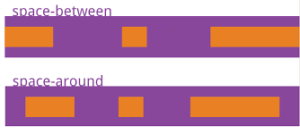
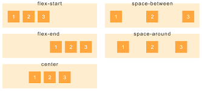

Logo
Justify-content:space-between Justify-content:space-around Justify-content:space-evenlycontainer and flexbox

FlexBox
Flexbox — container’ni joylashtirishda muhim vosita hisoblanib, uning yordamida bir nechta qulayliklarga ega bo’lishimiz mumkin

Container
CSS konteynerlari bir xil shrift rangi, fon rangi, shrift o'lchami, shrift oilasi va boshqa xususiyatlarga ega bo'lgan tarkibni guruhlash uchun ishlatiladi.
space-evenly
space-evenly -- barcha asosiy elementlarni teng ravishda bo'sh joylashtiradi barcha bo'sh joy har bir yordamchi element atrofida chap va o'ng bo'shliqlarga teng ravishda bo'linadi.

space-between
space-between birinchi elementni butunlay chapga va oxirgi elementni to'liq o'ngga qo'yadi, qolgan har qanday bo'sh joy qolgan bolalar o'rtasida teng taqsimlanadi.

align-items
Align-items elementlarni vertical boshqarish imkoniyatini beradi ya’ni y o’qi bo’yicha elementlarni chapga , o’nga , o’rtaga qo’ysa boladi

FlexBox
Flexbox — container’ni joylashtirishda muhim vosita hisoblanib, uning yordamida bir nechta qulayliklarga ega bo’lishimiz mumkin